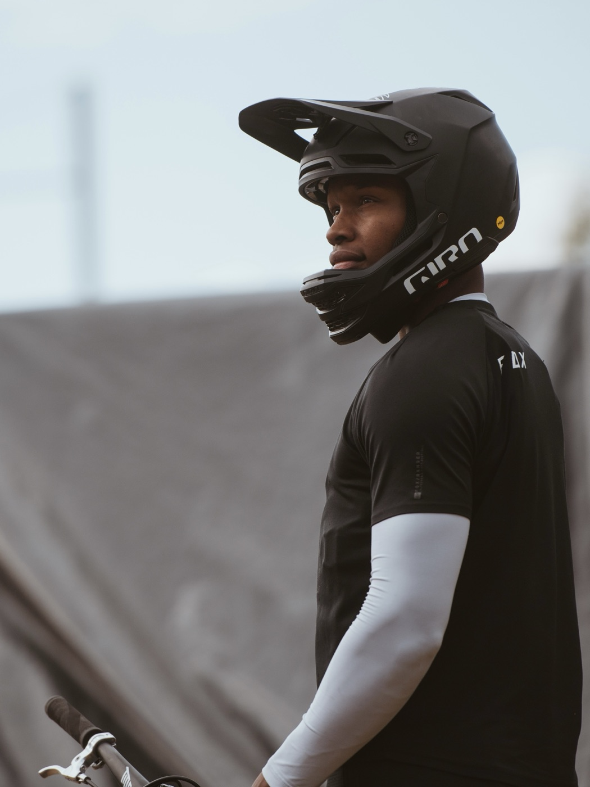
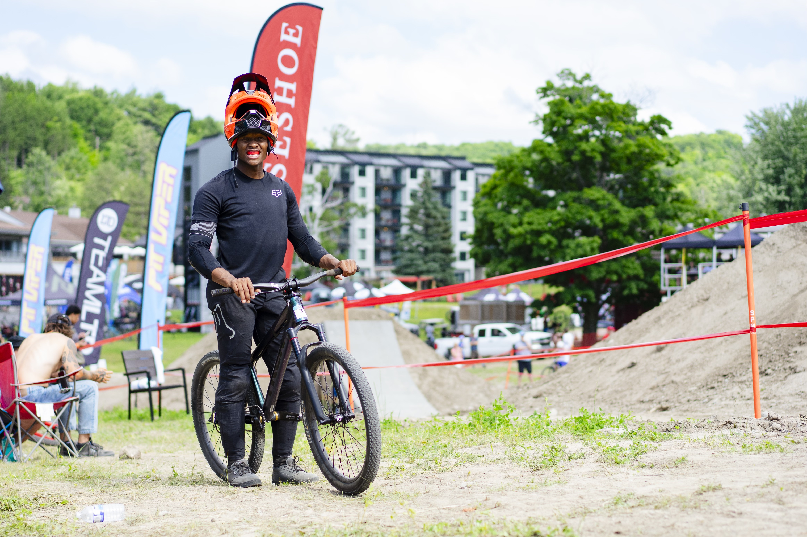
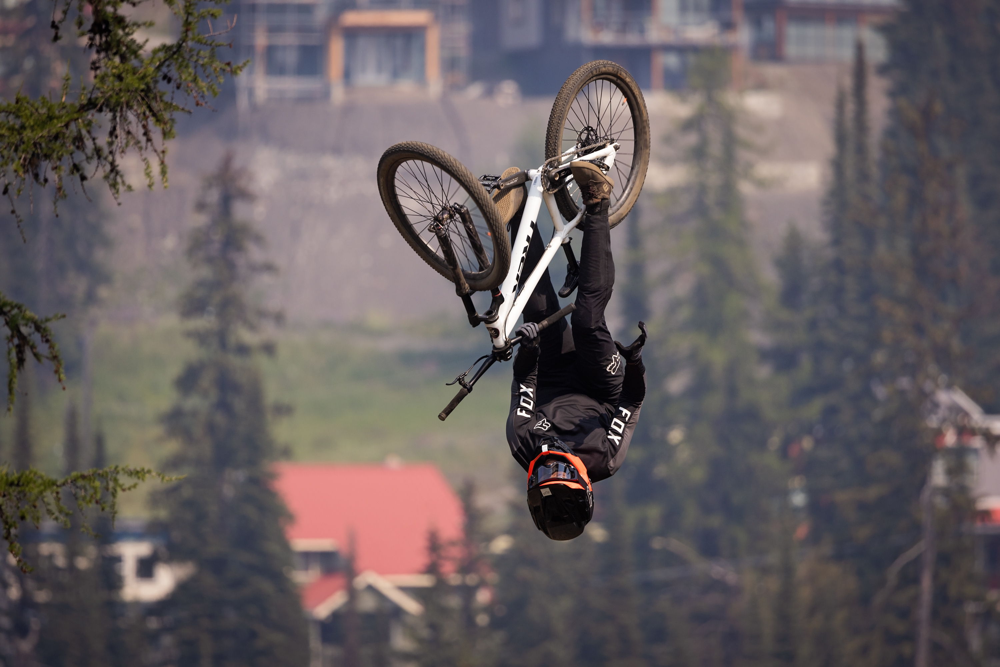

Tutorials & breakdowns
Step-by-step trick tutorials on Instagram and TikTok. Tutorials have a long shelf life: riders come back to them every session they work on a trick, with Keon's setup on screen the whole time.
Professional Slopestyle MTB Athlete



Keon O'Brien is a professional slopestyle mountain bike rider known for his world-first tricks, progression-focused videos, and contests on the FMB World Tour. Competing internationally since 2023, his sights are set on the FMB Diamond Series.
A world's first doesn't happen by accident. It's the result of vision, precision, and the kind of dedication that doesn't show up in highlight reels. These moments are built trick by trick, crash by crash—through quiet work and constant refinement. When it all lines up, it's more than just a clip. It's a new meta.
Keon lives for this process—pushing boundaries, redefining what's possible. And he's just getting started.
From short-form edits to full brand campaigns, Keon creates riding-based content that moves. Whether it's product integration, behind-the-scenes storytelling, or raw progression clips, every piece is built to capture attention and hold it.
Keon teaches riders two ways: tutorials that reach riders far beyond any one park, and in-person sessions where they learn from him directly. For partners, that makes him a trusted voice on how to ride, and on what to ride.
Step-by-step trick tutorials on Instagram and TikTok. Tutorials have a long shelf life: riders come back to them every session they work on a trick, with Keon's setup on screen the whole time.
Hands-on sessions with riders from first-time jumpers to aspiring competitors, where gear gets used, seen and talked about right where riders decide what to buy: at the jumps.
An active voice in the scene: answering riders' questions, sharing sessions and showing up where riders are. Partners get more than a logo on a jersey; they get an athlete riders trust.
Keon partners with brands that align with his riding, his audience and his vision. He brings progression people talk about, content built to hold attention, and an audience that shows up for it.
Short-form edits and campaign content created by Keon and built for Instagram and TikTok, where his audience already watches.
Your product in the riding, not just next to it: featured naturally in tricks, tutorials and behind-the-scenes content.
Contests, demos, launches and activations, with riding that draws a crowd and content that carries the event online.
Ongoing athlete partnerships that grow with his progression and his audience, season after season.
Tell Keon about your brand and what you have in mind.